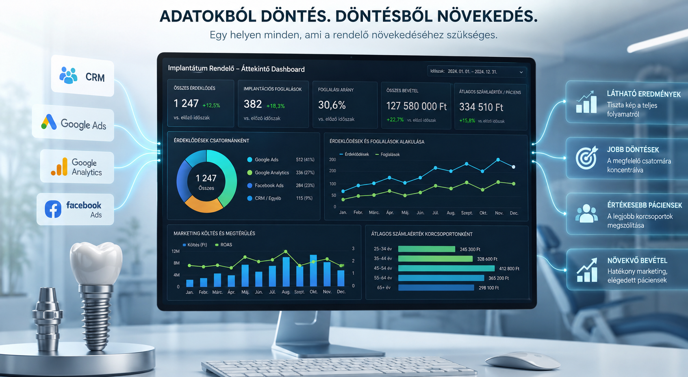

Külön rendszerek
Google Analytics, hirdetési fiókok, CRM, időpontfoglaló, számlázó, Excel vagy Google Sheets külön-külön mutatják a működést.
Adatvezérelt döntéstámogató rendszer KKV-knak
A legtöbb kis- és középvállalkozásban rengeteg értékes adat keletkezik: weboldal látogatások, hirdetési költések, ügyfélmegkeresések, foglalások, számlák, értékesítési adatok, Google táblázatok, CRM-exportok.
A probléma az, hogy ezek az adatok külön rendszerekben vannak, ezért a vezető gyakran nem látja egyben, mi történik a cégben.
Vezetői dashboard
Dönts adatokbólÜgyféltrendek, költségek, bevételek
Miért van rá szükség?
Google Analytics, hirdetési fiókok, CRM, időpontfoglaló, számlázó, Excel vagy Google Sheets külön-külön mutatják a működést.
A vezető gyakran nem látja egyben, honnan jönnek az ügyfelek, mi mennyibe kerül, és hol akad el a folyamat.
A döntéshez szükséges információk megvannak, csak több helyen elszórtan. Így a vezetői munka egy része kereséssel, egyeztetéssel és ellenőrzéssel telik.
Mit kapsz?
Az Adatból döntés szolgáltatás célja, hogy a meglévő adatokat átlátható, üzleti
döntéseket támogató dashboardba rendezzük. Nem grafikonokból indulunk ki, hanem abból,
hogy vezetőként milyen számokat kell látnod ahhoz, hogy jobb döntéseket tudj hozni. Emellett egyedi üzleti kérdéseket is felkutatunk.
Technikailag ez úgy néz ki, hogy minden adatot egy adatbázisba rendezek, ahol együttesen elemezhetővé válnak.
Használt technológiák: Google Cloud, Google BigQuery, Google Data Studio, SQL és Python.
Megnézzük, milyen rendszereid vannak, milyen adatok érhetők el, és milyen döntéstámogató dashboard lenne hasznos.
Közösen meghatározzuk a KPI-okat, előkészítjük az adatokat, majd elkészül az interaktív vezetői dashboard.
Átadáskor közösen értelmezzük az adatokat, később pedig havi frissítéssel és fejlesztéssel életben tartjuk a rendszert.
Milyen kérdésekre adhat választ?
A folyamat
Megnézzük, milyen rendszerekben vannak adataid: például Google Analytics, Google Ads, Meta Ads, CRM, időpontfoglaló, számlázó, Excel vagy Google Sheets.
Közösen meghatározzuk, hogy vezetőként milyen számokat kell látnod ahhoz, hogy jobb döntéseket tudj hozni.
Az exportált vagy bekötött adatokat előkészítjük, tisztítjuk, egységesítjük, majd megbízható riportkész formába rendezzük.
Elkészül az online elérhető dashboard, ahol dátum, kampány, csatorna, szolgáltatás vagy más szempont alapján vizsgálható a működés.
Átadáskor közösen értelmezzük a számokat: hol vannak lehetőségek, és mire érdemes figyelni a következő időszakban.
Csomagok és árak
50 000 Ft
Levonásra kerül a rendszer felépítésének díjából.
150-190e Ft
A felmérés 50 000 Ft-os díja beszámítható.
9 000 Ft / hó
Hosszú távú működtetés, hibaelhárítás.
Külön kérhető szolgáltatások
30 000 Ft / alkalom
50 000 Ft / adatforrás
Eredmény
A cél nem önmagában egy szép riport, hanem egy olyan vezetői műszerfal, amely segít eldönteni, melyik csatornára, szolgáltatásra, kampányra vagy folyamatra érdemes figyelni.

Kiderül, melyik csatorna hozza a valódi érdeklődőket és vásárlókat. Nemcsak a kampányok teljesítménye látszik, hanem az is, melyik marketingköltésből lesz tényleges üzleti eredmény.
Pontosabb kép a vásárlókról: követhetőbbé válik, melyik szolgáltatás, kampány, időszak vagy ügyféltípus teljesít jobban.
Jobban látható, hol akad el az értékesítési, foglalási vagy ügyfélkezelési folyamat.
Anonimizált esettanulmány
Az alábbi példa anonimizált formában mutatja be, milyen üzleti következtetéseket lehet levonni egy KKV adataiból 2 hét alatt. A cél nem az ügyfél azonosítása, hanem a módszer és az eredmények bemutatása, összefüggések keresése, marketing és weboldal hatékonyság összevetése a konkrét foglalásokkal és a bevétellel.

A rendelő több külön forrásból dolgozott: CRM, Google Ads, Google Analytics, Facebook Ads. A releváns információk külön-külön voltak elérhetők.

Kivel dolgoznál?
Korábban 10 évig állami informatikában dolgoztam adatbázisokkal. Data Engineer szemlélettel segítek abban, hogy a különböző rendszerekben keletkező adatokból vezetői döntéseket támogató riport és dashboard készüljön.
LinkedIn profil megnyitásaTitoktartás
Az együttműködés során a céges adatok, ügyféladatok és üzleti információk bizalmas kezelést kapnak. Referenciaként csak előzetes egyeztetés után, jóváhagyott formában használok fel projektből származó tanulságot.
Kezdjük az adatállapot-felméréssel
Az első lépésben feltérképezzük az adatforrásokat, a beköthető és exportálható adatokat, valamint azokat az üzleti kérdéseket, amelyekre a dashboardnak választ kell adnia.
Jelentkezni szeretnék